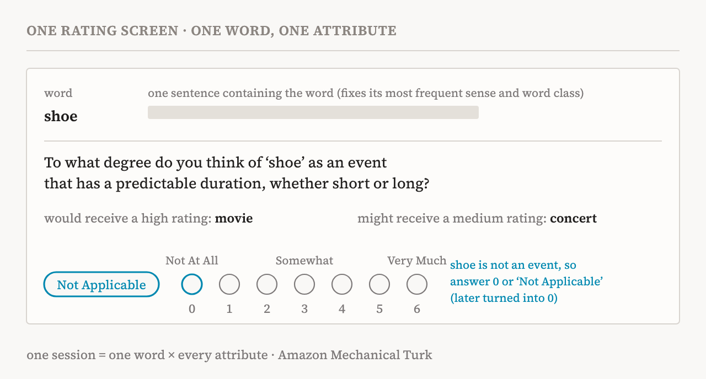

In 2016 the journal Cognitive Neuropsychology published “Toward a brain-based componential semantic representation”. The first author is Jeffrey R. Binder of the Medical College of Wisconsin; his co-authors are Lisa L. Conant, Colin J. Humphries and Leonardo Fernandino of the same college, Stephen B. Simons and Mario Aguilar of Teledyne Scientific, and Rutvik H. Desai of the University of South Carolina. The work was funded by the US Intelligence Advanced Research Projects Activity (IARPA).
If the meaning of a word can be broken into a few basic components, what should those components be? Instead of words such as ‘wing’ or ‘feather’, the authors propose using the kinds of experience the brain processes separately: seeing, hearing, touching, moving, feeling and thinking. They define about 65 such ‘experiential attributes’, have people rate how strongly each of 535 English words is associated with each attribute, and test how well the resulting attribute vectors capture the categories of words and the similarity between them.
The paper is long, so this full summary comes in two parts. This Part 1 covers why the attributes were chosen, the words and questions, how the ratings were collected and how far the attributes overlap; Part 2, “Word Meaning from the Brain's Kinds of Experience, Part 2: What the Ratings Showed”, covers the results and the authors' discussion. The claims and interpretations are all the authors'. The ‘In plain terms’ boxes are explanations and analogies added to help the reader; they are not in the paper.
The limits of verbal features
Theories of semantic representation generally begin by analysing conceptual content. This analytical or componential approach assumes that concepts can be represented by sets of features or attributes that are in some sense the basic components of meaning. Brain imaging has raised interest in how concepts are represented in the brain, and evidence has accumulated that these representations are at least partly ‘embodied’ in the perception, action and other modal neural systems through which concepts are acquired. In this paper the authors explore whether a componential model of meaning can be built entirely on such functional divisions in the human brain.
In classical category theory, concepts are defined by the presence or absence of binary features that are necessary and sufficient for identifying a category. The concept bird, for example, is made of features such as wings, feathers, beak, flying and egg-laying. Later work showed that most categories have fuzzy boundaries because members differ in how prototypical they are: a penguin can still be identified as a bird, though more slowly, by weighing all of its features together, even though it does not fly. Feature-generation tasks have documented what people think the features of things are and how important each feature is for a concept. Such data are a powerful way of measuring similarity between concepts and grouping them into hierarchical categories.
The limitation the authors point to is that these features are usually complex concepts themselves. Wings, feathers and beaks are components in the sense of being parts of a larger thing, but they are no more primitive than the things they define. They too must be learned through perceptual and verbal experience, each has its own defining features, and those have theirs. The resulting combinatorial explosion makes feature-based theories very hard to constrain. Even for the closed set of known physical objects the possible physical features are extremely many, and so are motion and action features such as flying, swimming, running, barking and howling. Being unable to find a set of atomic features from which all others derive limits the explanatory value of such approaches in several areas.
The limitation of central concern here is that there is no known relationship between verbal features and neural mechanisms. There are no neural systems dedicated to feathers, wings, beaks or flight, and it is implausible that such systems exist for every conceivable feature. Even if single concepts turn out to have dedicated neurons or ensembles, so-called ‘grandmother cells’, their existence says nothing about how external or internal stimuli come to activate them; without that mechanism, saying each concept has a cell adds nothing beyond a list of the concepts. What the authors want to understand is why concepts are organized in the brain as they are: what facts about the brain decide that a concept is represented by one group of cells rather than another. Feature-based representations are similarly limited on the related question of how features and concepts are learned. And the idea of abstract ‘concept cells’ does not address the deeper question of how concepts can be understood without a ‘grounding’ in sensory–motor experience that lets them refer to the environment and gives conscious thought its phenomenal qualia (Harnad, 1990).
The authors see these limits as a direct reflection of what traditional feature theories aim to do, which is to describe the things that exist, their similarity structure and their categories; how that information is organized in the brain lies outside those aims. Embodiment theories, in contrast, analyse conceptual content fairly directly in terms of sensory, motor, affective and other experiences and their modality-specific neural representations. In the theory set out here, neurobiologically defined ‘experiential attributes’ serve as the primitive features for analysing conceptual content, while also grounding concepts in experience and giving a mechanistic account of how concepts are acquired.
Defining conceptual features by neural processes is a radical departure from verbal feature analysis. Earlier work along these lines includes Jackendoff's Conceptual Semantics, which treats meaning in terms of experiential primitives with emphasis on space, time, events and causality, and the sensory–functional theory of Warrington and colleagues, proposed to explain category-related impairments in neurological patients, in which the semantic content of physical things reduces to two experiential attributes processed in two brain networks. Later work recognized the limits of this simple dichotomy and studied an ever-growing list of sensory, motor and affective attributes and their neural correlates.
Such studies usually focused on one attribute or a few. Lynott and Connell collected ratings for 423 concrete adjectives describing object properties and 400 nouns on how strongly each is associated with each of the five senses. Gainotti and colleagues split vision into shape, colour and motion and added manipulation as a motor dimension, and had 49 animal, plant and artefact concepts rated. Hoffman and Lambon Ralph had 160 object nouns rated on similar dimensions; the ratings predicted lexical–semantic processing speed better than verbal feature representations, and supported a new distinction: mechanical devices such as vehicles have strong sound and motion characteristics that make them more similar to animals than other non-living objects are.
Earlier work focused overwhelmingly on concrete object and action concepts, but more recent studies explore dimensions of experience that may matter more for abstract concepts, especially affective and social experience. Crutch and colleagues had 200 abstract and 200 concrete nouns rated for relatedness to time, space, quantity, emotion, polarity (positive or negative), social interaction, morality and thought, as well as sensation and action. These representations predicted how a severely aphasic patient performed on an abstract noun comprehension task, whereas similarity from latent semantic analysis (LSA) of word usage did not. A further analysis found three latent factors (perceptual salience, affective association and magnitude) that explained 81% of the variance; abstract nouns were rated higher than concrete ones on emotion, polarity, social interaction, morality and space.
Building on this work, the authors aim for a more comprehensive representation based on known modalities of neural information processing, one that captures the experiences central to acquiring event concepts as well as object concepts, and abstract as well as concrete ones.
How the attributes were chosen
Two principles guided the choice of components. First, all aspects of mental experience can contribute to concept acquisition and so to concept composition. These include not only sensory perception but also affective responses to things and situations, experience of performing actions, perception of spatial and temporal phenomena, perception of causality, experience of social phenomena, and experience of internal cognitive phenomena and drive states. Second, the authors focus on experiences for which there are likely to be distinguishable neural processors, judging from animal physiology, brain imaging and neurological studies, and in particular on large-scale neural systems that can be told apart with in vivo human imaging. They do not require these processors to be self-contained ‘modules’ or tightly localized; it is enough that each processes information that mainly represents one aspect of experience.
The resulting attributes are listed in the paper's Table 1 (sensory and motor, 33 attributes) and Table 2 (spatial, temporal, causal, social, cognition, emotion, drive and attention, 32 attributes). The table below combines them by domain.
| Domain | n | Attributes |
|---|---|---|
| Vision | 15 | Vision, Bright, Dark, Colour, Pattern, Large, Small, Motion, Biomotion, Fast, Slow, Shape, Complexity, Face, Body |
| Somatic | 5 | Touch, Temperature, Texture, Weight, Pain |
| Audition | 7 | Audition, Loud, Low, High, Sound, Music, Speech |
| Gustation | 1 | Taste |
| Olfaction | 1 | Smell |
| Motor | 4 | Head, Upper limb, Lower limb, Practice |
| Spatial | 7 | Landmark, Path, Scene, Near, Toward, Away, Number |
| Temporal | 4 | Time, Duration, Long, Short |
| Causal | 2 | Caused, Consequential |
| Social | 4 | Social, Human, Communication, Self |
| Cognition | 1 | Cognition |
| Emotion and evaluation | 10 | Benefit, Harm, Pleasant, Unpleasant, Happy, Sad, Angry, Disgusted, Fearful, Surprised |
| Drive | 2 | Drive, Needs |
| Attention | 2 | Attention, Arousal |
Sensory attributes
The first visual attribute is how easily something can be seen (Vision). Components of visual experience likely to have distinguishable neural processors are luminance, size, colour, visual texture, shape, motion and biological motion. Within the shape network are networks that mainly process faces, human body parts and three-dimensional spaces.
Luminance is basic to vision but also relevant to concepts defined by brightness or darkness, such as sun, light, gleam, shine, ink, night, dark and black. It is a scalar, a continuous one-dimensional quantity. Language tends to focus on the ends of scalars (bright/dark, hot/cold, heavy/light, loud/soft), which raises the general question of whether the two ends are represented by distinguishable neural processors. Some neurons in the retina and V1 respond selectively to high luminance and others to low (ON and OFF cells), giving two networks distinguishable at a microscopic scale; but if such neurons intermingle in one network, the two may be indistinguishable at the macroscopic scale of imaging. Table 1 lists Bright and Dark separately.
Visual size is linked to the retinotopic organization of the whole visual system and has been proposed as a major determinant of medial-to-lateral organization even at the highest levels of the ventral visual stream. At these levels what matters is the ‘typical’ size of an object, not its size on the retina: images of buildings activate medial regions more than images of insects, and the reverse holds laterally, even at the same physical size. The theory that concepts are partly represented in perceptual systems therefore predicts similar differences for concepts of reliably large and reliably small objects.
There is strong evidence for a fairly specialized colour perception network, and for activation in or near it by concepts with colour content. Whether particular colours (red, green, blue) have distinguishable processors has not been studied, and the authors think it unlikely. Colour-sensitive neurons in monkey inferior temporal cortex form millimetre-sized ‘globs’ within which neurons cluster by colour preference, but on a scale of about 50–100 µm, below the resolution of current imaging. More importantly, cultures divide the visible spectrum into colour concepts very differently, whereas the layout of colour-sensitive neurons presumably does not differ. So the authors assume that one processor encodes the colour content of concepts whatever the colour: lemon, reliably associated with one colour, should activate it about as much as coffee, reliably associated with another.
Visual motion involves a relatively specialized processor, MT or V5, whose responses vary with motion velocity and coherence. Velocity matters conceptually (run, dash, zoom, creep, ooze, walk; bullet, jet, hare, snail, tortoise, sloth), hence the attributes Fast and Slow. There is no evidence for large-scale cortical organization by type or manner of motion (turn, bounce, roll, float, spin), so Motion captures association with characteristic visible motion in general. The exception is biological motion, linked to a processor in the posterior superior temporal sulcus (STS) that is clearly distinct from MT. Biological motion has the higher-order complexity of face and body actions and is central to understanding the affective and intentional states of other agents, so Biomotion is one of the key attributes that distinguish intentional agents (boy, girl, woman, man) from inanimate things.
Shape perception involves an extensive region including the lateral occipital complex and the adjacent ventral occipital–temporal surface (VOT), which respond more to images of objects than to scrambled images. Shape is generally the most important attribute of concrete object concepts and distinguishes them from abstract (affective, social, cognitive) entities and from events. It is not a defining feature of substance nouns (metal, plastic, water) but matters for some mass nouns (butter, coffee, rice), and objects also vary in shape complexity: animals tend to have more complex shapes than plants or tools. The authors hypothesize that both shape salience and shape complexity determine activation of shape regions, hence Shape and Complexity.
More focal areas within or next to these regions respond preferentially to human faces and body parts. A specialized face mechanism fits the central role of face recognition in social interaction, and seeing body parts probably helps map observed actions onto one's own body schema when learning actions. As a first approximation, the authors propose that every concept referring to human beings activates both processors to some degree; the face processor perhaps only slightly for general human types and roles (boy, man, nurse), which include no specific face, and more for concepts of specific individuals (brother, father, Einstein). Three-dimensional space is treated under the spatial attributes below.
Somatosensory networks represent body location, body position and joint force (proprioception), pain, the surface of objects (texture and temperature) and object shape. Which part of the body an object touches is usually the same part used to explore or manipulate it, and concepts and language tend to encode the action rather than the touch (we say ‘I threw the ball’, not ‘the ball touched my hand’), so knowledge of body location was encoded with action attributes rather than somatosensory ones. Temperature, Texture and Pain were included, as was Weight, a salient attribute of objects we handle that is perceived mainly through proprioception. Temperature and weight are scalars too: these kinds of information are distinguishable, but no topography separating, say, hot from cold has been shown. Texture was defined as a continuum from smooth to rough. For all three, the whole continuum is a single component: Temperature captures how salient temperature is for a concept, whether hot or cold. Research on conceptual processing of somatosensory information has focused almost entirely on impaired knowledge of body parts in neurological patients, without a definitive localization. Overlap between networks for real pain, empathic pain and ‘social pain’ suggests that retrieving pain concepts involves simulation; to the authors' knowledge, no study had yet examined the conceptual representation of temperature, texture or weight. Finally, shape is partly learned by touch, but how far independently of vision is unclear; some objects are seen but never felt, while the converse is rare for sighted people. So the visual shape query was meant to capture shape knowledge in both modalities, and a separate query on personal manipulation experience (Practice, below) captures the importance of felt shape relative to seen shape. How easily something could be recognized by touch is captured by Touch.
The auditory cortex has low-level areas tuned to frequency, amplitude and location, and higher levels specialized for auditory ‘objects’ such as environmental sounds and speech. Matching attributes capture how easily something can be heard (Audition) and how strongly a concept is associated with a low-pitched (Low), high-pitched (High), loud (Loud), recognizable (Sound) or speech-like (Speech) sound. ‘Low in amplitude’ was left out because it is salient only for the few concepts that name a quiet variant (whisper); concepts of the absence of sound (silence, quiet) are probably better encoded as a null value on Loud, since fMRI shows auditory regions whose activity rises with sound intensity but not the converse. A few studies of sound knowledge reported activation near the posterior STS, an auditory association region implicated in environmental sound recognition, and a patient with a circumscribed lesion there was selectively impaired at recognizing sound-related words; but nothing is yet known about the conceptual representation of specific auditory attributes such as frequency or amplitude. The location of sounds is important in hearing but has almost no representation in language apart from (multimodal) spatial concepts; no concept has a component like ‘makes sounds from the left’. Spatial attributes are therefore represented by modality-independent spatial components. Lastly, music perception engages relatively specialized, right-lateralized networks, and many words refer to musical phenomena or to things that produce music, so the model includes Music.
Taste and smell are each represented by a single attribute (Taste, Smell). These systems show no clear large-scale organization along any dimension, and their neurons often respond to a broad range of items; both kinds of concept have been linked with specific early sensory and higher associative processors.
Motor attributes
The motor components capture how strongly a concept is associated with actions of particular body parts. The neural representation of action verbs has been studied extensively; many studies show action-specific activation of a high-level network including the supramarginal gyrus and posterior middle temporal gyrus. There is also evidence, somewhat controversial, for somatotopic representation of action verbs in primary sensorimotor areas. Object concepts associated with particular actions also activate the action network, with evidence of somatotopically specific activation depending on which body part is used with the object. Following precedent in neuroimaging, actions were split three ways: head-related (face, mouth or tongue), upper limb (arm, hand or fingers) and lower limb (leg or foot). Eye actions were left out as confusing, since all visual experience involves the eyes, so any visible object could be construed as ‘associated with action involving the eyes’.
How strongly action attributes are represented in action networks may also depend on personal experience. Most people would rate ‘piano’ as strongly associated with upper limb actions, yet most have never performed those actions; for pianists the action representation of ‘piano’ is likely more extensive. So a separate component, Practice, captures how much personal experience the rater has with performing the actions associated with the concept.
Spatial, temporal and causal attributes
Neural systems for spatial experience have been studied at many levels, and spatial concepts and attributes are generally acquired through correlated, multimodal inputs. The most obvious spatial content in language is the set of relations expressed by prepositions, and various parietal regions, particularly the left inferior parietal lobe, are involved in processing spatial prepositions. But prepositions seem to express almost all of the explicit relational spatial content in English, so a component targeting it seems unnecessary (the words high on it would just be the spatial prepositions). The spatial components focus instead on other kinds of spatial information in nouns, verbs and adjectives.
Perception of three-dimensional space involves a specialized processor in the posterior parahippocampal region. It relies largely on vision but probably also on proprioception when we move through space, and on auditory localization. Some concepts refer directly to interior spaces (kitchen, foyer, bathroom, classroom) or types of building (library, school, hospital) and seem to include their general size and layout. They also include the knowledge that they can be entered, navigated and exited, which allows combinations such as ‘entered the kitchen’ or ‘went out of the library’ that do not work for objects without large interiors (*entered the chair). The property that decides whether a concept activates a three-dimensional representation, the authors argue, is how far it evokes a particular ‘scene’, an array of objects in three-dimensional space, either directly (space and building names) or through thematic relations (oven evokes kitchen). A chair, linked to no particular scene, probably would not. This graded property is the attribute Scene.
Large-scale (topographical) spatial information is critical for navigation, and large things with fixed locations, such as landforms and buildings, can serve as landmarks in a mental map. The authors hypothesize that such concepts are partly encoded in navigation systems in the hippocampal, parahippocampal and posterior cingulate gyri, and assess the attribute Landmark by asking how far the concept could serve as a landmark on a map.
Spatial cognition also covers the direction or path of motion. Some verbs of location change name a direction (ascend, climb, descend, rise, fall) or a type of path (arc, bounce, circle, jump, orbit, swerve); others imply horizontal motion (run, walk, crawl, swim) or paths toward or away from an observer (arrive, depart, leave, return); and some things are associated with a typical path (bird, butterfly, car, rocket, satellite, snake). MT has a columnar organization by preferred axis of motion, but at a microscopic scale; in human fMRI, the spatial aspects of motion have been linked to the intraparietal sulcus (IPS) and surrounding dorsal visual stream. This is the attribute Path.
A final aspect is peripersonal proximity, central to action, threat detection and acquiring resources, with somewhat specialized neural mechanisms in animals and humans. The authors hypothesize that these systems partly encode concepts of objects typically within easy reach and the actions performed on them (Near). Since some verbs indicate movement away from the self (give, punch, tell, throw) and others toward it (acquire, catch, receive, eat), two further components were added, Away and Toward.
Numerosity is a somewhat specialized domain with well-documented neural correlates. Besides number names, many words are associated with quantity (amount, number) or with particular numbers (dime, hand, egg). Numerosity processing usually does not involve three dimensions, but seems to depend on directional vector representations similar to those of spatial cognition, so Number was included and loosely placed in the spatial domain.
Event concepts include temporal information about duration and order. Some events have a typical duration that may be a salient attribute (breakfast, lecture, movie, shower); some concepts refer to durations themselves (minute, hour, day, week); typical durations may be very short (blink, flash, pop, sneeze) or long (childhood, college, life, war). Events may also recur at particular times: daily (shower, breakfast, commute), weekly or monthly (Monday, weekend, payday), yearly (holidays, seasons, weather phenomena), or in particular phases of life (infancy, childhood, college, marriage, retirement). The neural correlates of this information are not yet clear, but because time is pervasively conceived in spatial terms, temporal concepts probably share part of their neural representation with spatial ones. The temporal components capture association with a characteristic duration (Duration), with a long or short duration (Long, Short), and with a particular or predictable time (Time).
Causal information concerns cause and effect. Events may have a salient precipitating cause (infection, kill, laugh, spill) or occur without an apparent cause, and may or may not have highly likely consequences. Imaging implicates several inferior parietal and temporal regions in low-level perception of causality, and a few studies of conceptual causal processing implicate these and other areas. The causal components capture how far a concept has a clear preceding cause (Caused) and how far an event or action has probable consequences (Consequential).
Social, cognitive, emotional, drive and attention attributes
Theory of mind (TOM) is the ability to infer or predict mental states and processes in other volitional beings, usually other people. The authors hypothesize that the brain systems behind it are involved in encoding words for intentional entities or actions, because learning such concepts often involves TOM; the attribute essentially captures intentionality. Besides a query about events with social interaction (Social) and one about mental activities, they included an object query on how far a thing has human or human-like intentions, plans or goals, and a matching verb query on how far an action reflects them (Human). TOM most consistently involves the medial prefrontal cortex, posterior cingulate/precuneus and temporoparietal junction (TPJ), with several studies also implicating the anterior temporal lobes. The TPJ is not consistently defined and may include parts of the posterior superior temporal gyrus and sulcus, supramarginal gyrus and angular gyrus; across tasks TOM is often associated with angular gyrus activation, though peaks vary between tasks, and while some studies show right lateralization, meta-analyses suggest bilateral involvement.
Another aspect is the representation of the self. People recall information better and respond faster when it relates to themselves (the self-reference effect), and imaging implicates cortical midline structures, especially medial prefrontal and parietal cortices. Both self- and other-judgments activate these regions, but medial prefrontal cortex has been reported to be more active for self-trait judgments and medial parietal regions for other-trait judgments, with a ventral-to-dorsal gradient within medial prefrontal cortex; left ventrolateral prefrontal cortex and left insula have been more active for self-judgments, and bilateral TPJ and cuneus for other-judgments. The Self query asks how far a noun is ‘related to your own view of yourself’, or a verb is ‘an action or activity that is typical of you, something you commonly do and identify with’.
A third aspect is communication, by language or other means, the basis of all social interaction; many nouns (speech, book, meeting) and verbs (speak, read, meet) are closely tied to communicating. The authors hypothesize that understanding them relatively activates language networks (lexical retrieval, syntax, phonology, articulation) and gestural communication systems (Communication).
A central premise of the approach is that all aspects of experience can contribute to concepts. For self-aware humans, purely cognitive events and states are part of experience: having a thought, coming up with an idea, solving a problem or considering a fact are experienced as events no less real than sensory or motor ones. Many so-called abstract concepts refer directly to cognitive events and states (decide, judge, recall, think) or to the mental ‘products’ of cognition (idea, memory, opinion, thought). The authors propose that such concepts are learned largely by generalizing across these cognitive experiences, exactly as concrete concepts are learned by generalizing across perceptual and motor ones (Cognition). Many imaging studies have tried to fractionate domain-general operations into ‘working memory’, ‘decision’, ‘selection’, ‘reasoning’, ‘conflict suppression’ and so on, without clear anatomical divisions; the consensus is a largely shared bilateral network for ‘working memory’, ‘cognitive control’ or ‘executive’ processes in the inferior and middle frontal gyri (‘dorsolateral prefrontal cortex’), mid-anterior cingulate gyrus, precentral sulcus, anterior insula and perhaps dorsal parietal regions. The authors hypothesize that retrieving concepts of cognitive phenomena involves partial simulation of them within this network, just as object and action concepts partly activate sensory and motor systems.
There is strong evidence for a network involved in affective processing in general: the orbitofrontal cortex, dorsomedial prefrontal cortex, anterior cingulate gyri (subgenual, pregenual and dorsal), inferior frontal gyri, anterior temporal lobes, amygdala and anterior insula, whose activation is modulated by the emotional content of words and text. The nature of individual affective states has long been debated. Dimensional accounts hold that affective states arise from combinations of a few basic dimensions, most commonly valence and arousal; in current psychological construction accounts this input is then interpreted as a particular emotion through further cognitive processes such as appraisal or retrieval of memories and semantic knowledge. Other influential theories treat affective states as discrete emotions with consistent, discriminable patterns of physiology, facial expression and neural correlates; basic emotions are a subset considered biologically predetermined and culturally universal, most often Ekman's anger, fear, disgust, sadness, happiness and surprise. Within studies, imaging supports dissociable dimensions of valence and arousal, but the regions associated with them or their endpoints are inconsistent across studies. Meta-analyses suggest different activation patterns for the basic emotions but lack specificity: regions are generally associated with more than one emotion, and emotions with more than one region. Current evidence does not fit a one-to-one mapping between regions and emotions or dimensions, though spatially overlapping but discriminable networks remain possible, and multivariate pattern classifiers are providing emerging evidence for distinct neural patterns for discrete emotions and for combinations of valence and arousal.
The model therefore includes a component for each of Ekman's basic emotions (Happy, Sad, Angry, Disgusted, Fearful, Surprised) and components for the two dimensions of the circumplex model, valence and arousal (Arousal). Because each end of the valence continuum may have a distinct neural basis, valence was split into Pleasant and Unpleasant. The emotion domain of Table 2 also includes how far something could help or benefit you or others (Benefit) and how far it could cause harm (Harm).
Drives are central associations of many concepts. Following Maslow, the authors treat them as needs that must be filled to reach homeostasis or enable growth: physiological needs (food, rest and sleep, sex, emotional expression), security, social contact, approval and self-development. Drive experiences are closely related to emotions, which arise whenever needs are fulfilled or frustrated, and to reward, the brain's response to a satisfied drive; the authors use ‘drive’ synonymously with ‘reward prediction’ and ‘reward anticipation’. Extensive evidence links the ventral striatum, orbitofrontal cortex and ventromedial prefrontal cortex to drive and reward. The drive components capture the general motivation associated with a concept (Drive) and how far the concept itself refers to a basic need (Needs).
Attention is central to information processing but not usually thought of as a type of information. Still, some concepts (‘scream’) may be so strongly associated with attentional orienting that the attention-capturing event becomes part of the concept, so a component asks how far a concept is ‘someone or something that grabs your attention’ (Attention).
535 words and the form of the questions
Ratings for 535 English words were collected through the crowdsourcing tool Amazon Mechanical Turk. The aim was to learn how strongly a relatively unselected sample of people associates each word's meaning with particular kinds of experience. The authors call the continuous ratings obtained for a word the attributes making up its meaning. These are subjective judgments, not objective truth, and will vary somewhat with personal experience and background, idiosyncratic associations, motivation and understanding of the instructions; the hope was that mean ratings from a large enough sample would capture the population's central tendencies. Because the authors hypothesize that all concept learning depends on this set of neural systems, the same attributes were rated regardless of word class or ontological category.
The words were 434 nouns, 62 verbs and 39 adjectives. All the verbs and adjectives and 141 of the nouns had been pre-selected as materials for the Knowledge Representation in Neural Systems (KRNS) project, a multi-centre programme sponsored by IARPA. Because the KRNS set was limited to relatively concrete concepts and a restricted set of noun categories, 293 nouns were added to include more abstract concepts and allow richer comparisons.
| Category | n | Examples |
|---|---|---|
| Living things › Animals | 30 | crow, horse, moose, snake, turtle, whale |
| Living things › Body parts | 14 | finger, hand, mouth, muscle, nose, shoulder |
| Living things › Humans | 42 | artist, child, doctor, mayor, parent, soldier |
| Living things › Human groups | 10 | army, company, council, family, jury, team |
| Living things › Plants | 30 | carrot, eggplant, elm, rose, tomato, tulip |
| Other natural objects › Natural scenes | 12 | beach, forest, lake, prairie, river, volcano |
| Other natural objects › Miscellaneous | 7 | cloud, egg, feather, stone, sun |
| Artifacts › Furniture | 7 | bed, cabinet, chair, crib, desk, shelves, table |
| Artifacts › Hand tools | 27 | axe, comb, glass, keyboard, pencil, scissors |
| Artifacts › Manufactured foods | 18 | beer, cheese, honey, pie, spaghetti, tea |
| Artifacts › Musical instruments | 20 | banjo, drum, flute, mandolin, piano, tuba |
| Artifacts › Places/buildings | 28 | bridge, church, highway, prison, school, zoo |
| Artifacts › Vehicles | 20 | bicycle, car, elevator, plane, subway, truck |
| Artifacts › Miscellaneous | 10 | book, computer, door, fence, ticket, window |
| Concrete events › Social events | 35 | barbecue, debate, funeral, party, rally, trial |
| Concrete events › Nonverbal sound events | 11 | belch, clang, explosion, gasp, scream, whine |
| Concrete events › Weather events | 10 | cyclone, flood, landslide, storm, tornado |
| Concrete events › Miscellaneous | 4 | accident, fireworks, ricochet, stampede |
| Abstract entities › Abstract constructs | 40 | analogy, fate, law, majority, problem, theory |
| Abstract entities › Cognitive entities | 10 | belief, hope, knowledge, motive, optimism, wit |
| Abstract entities › Emotions | 20 | animosity, dread, envy, grief, love, shame |
| Abstract entities › Social constructs | 19 | advice, deceit, etiquette, mercy, rumour, truce |
| Abstract entities › Time periods | 10 | day, era, evening, morning, summer, year |
| Concrete actions › Body actions | 10 | ate, held, kicked, laughed, slept, threw |
| Concrete actions › Locative change actions | 14 | approached, crossed, flew, left, ran, put, went |
| Concrete actions › Social actions | 16 | bought, helped, met, spoke to, stole, visited |
| Concrete actions › Miscellaneous | 12 | broke, built, damaged, fixed, found, watched |
| Verbs › Abstract actions | 5 | ended, lost, planned, read, used |
| Verbs › States | 5 | feared, liked, lived, saw, wanted |
| Adjectives › Abstract properties | 13 | angry, clever, famous, friendly, lonely, tired |
| Adjectives › Physical properties | 26 | blue, dark, empty, heavy, loud, shiny |
Queries were made as uniform as possible across attributes and word classes, with some flexibility to keep them natural. All took the form {head}{relation}{content}. The head was the same within a word class: ‘To what degree do you think of this thing as …’ for nouns, ‘To what degree do you think of this as …’ for verbs, and ‘To what degree do you think of this property as …’ for adjectives. The content is what is being assessed and the relation links it to the word. For Colour, for example, a noun was asked about ‘having a characteristic or defining color’, a verb about ‘being associated with color or change in color’, and an adjective about ‘describing a quality or type of color’.
For the three scalar somatosensory attributes, Temperature, Texture and Weight, the two ends were queried separately for clarity: rather than ‘hot or cold to the touch’, there were separate queries for hot and for cold, and the Temperature rating was the higher of the two. Texture was computed likewise from Rough and Smooth, and Weight from Heavy and Light.
A few attributes made no sense for some word classes. Complexity, how visually complex an entity appears, has no sensible correlate for verbs; Practice, the rater's personal experience manipulating an entity or performing an action, none for adjectives; and Caused, how far an entity results from a prior event or an action causes change, none for adjectives. These were not rated for those classes.
How the ratings were collected
Amazon Mechanical Turk connects ‘requestors’ who post tasks with ‘workers’ who complete them for payment, and requestors may accept or reject responses on quality criteria. Participants had to have completed at least 10,000 previous jobs with at least a 99% acceptance rate, and to have US addresses. Non-native English speakers were asked not to take part, though this could not be verified. After a page of instructions, participants gave their age, gender, years of education and occupation; no identifying information was collected.
In each session a participant was assigned one word and rated it on all the components. A sentence containing the word specified the word class and sense: two sentences conveying the word's most frequent sense were written for each word, and one was chosen at random and used throughout the session. Participants were paid a small stipend per word and could return for as many sessions as they liked. A script assigned words at random, never the same word twice to the same participant.

Each attribute had its own screen with the word, the sentence, the query, an example of a word that ‘would receive a high rating’, an example that ‘might receive a medium rating’, and the options: a row of buttons numbered 0 to 6 with the labels Not At All, Somewhat and Very Much above them, and a ‘Not Applicable’ button to the left of 0. Participants were warned that some queries ‘will be almost nonsensical’ because they refer to aspects of meaning that do not apply: asked, for instance, ‘To what degree do you think of shoe as an event that has a predictable duration, whether short or long?’, with movie as a high example and concert as a medium one, they should answer 0 or ‘Not Applicable’, since a shoe is a static thing. All ‘Not Applicable’ responses were later converted to 0.
In all, 16,373 sessions were collected from 1,743 participants (an average of 9.4 sessions each). Of the participants, 43% were female, 55% male and 2% gave no gender. Their mean age was 34.0 years (SD 10.4) and mean education 14.8 years (SD 2.1).
Unsupervised crowdsourcing has the limitation that some participants may not follow instructions, and some appeared to respond randomly or give the same response throughout. So the authors computed a simple measure of deviation from the group. If 30 participants rated word X, there were 30 vectors of 65 elements, whose average is the group mean for X; each participant's quality score was the correlation between their vector and that mean. The acceptance threshold was set at r = 0.5, the edge of a prominent lower tail in the distribution. This rejected 1,097 sessions (6.69%). The final data set had 15,268 rating vectors, with a mean individual-to-group correlation within words of 0.785 (median 0.803) and an average of 28.6 rating vectors per word (SD 2.0, range 17–33). Mean ratings for each word, computed from the accepted sessions only, are available for download.
How much do the attributes overlap?
The authors explore the data through three questions. How much independent information does each attribute carry, and how are the attributes related? (They were chosen to represent distinct kinds of experience, but may overlap conceptually, covary in the world, or covary through associations in raters' minds.) Do the attributes capture important distinctions between a priori ontological types and categories, as they should if conceptual knowledge really rests on these neural systems? And what groupings does the covariance structure itself contain, and how do they differ from a priori categories?
To measure redundancy, the authors computed the mutual information (MI) for all pairs of attributes from the individual ratings after removing outliers. MI measures how dependent two variables are and ranges from 0 for complete independence to 1 for identical variables. It was generally very low (mean 0.049), but some pairs and groups were more redundant. The largest MI was for Pleasant–Happy (0.643); the two constructs probably evoked very similar ideas in raters' minds. Other relatively high pairs were Small–Weight (0.344), Caused–Consequential (0.312), Practice–Near (0.269), Taste–Smell (0.264) and Social–Communication (0.242).
Groups with relatively high pairwise MI were a human-related group (Face, Speech, Human, Body, Biomotion; mean pairwise MI 0.320), an attention–arousal group (Attention, Arousal, Surprised; 0.304), an auditory group (Audition, Loud, Low, High, Sound, Music; 0.296), a visual–somatosensory group (Vision, Colour, Pattern, Shape, Texture, Weight, Touch; 0.279), a negative affect group (Angry, Sad, Disgusted, Unpleasant, Fearful, Harm, Pain; 0.263), a motion group (Motion, Fast, Slow, Biomotion; 0.240) and a time group (Time, Duration, Short, Long; 0.193).
A factor analysis looked for latent dimensions. Assuming correlated factors, the authors used principal axis factoring (PAF) with promax rotation on the mean attribute vectors of the 496 nouns and verbs; adjectives were left out so that Practice and Caused could be included. The number of factors came from parallel analysis: PAF on 1,000 random permutations of the raw data, keeping factors whose eigenvalues exceeded the 95th percentile of the random eigenvalues, then checking interpretability. The Kaiser–Meyer–Olkin measure was 0.874 and Bartlett's test of sphericity was significant, so the data were suitable for factoring. 16 factors had eigenvalues significantly above chance; together they explained 81.0% of the variance, and all were kept as interpretable.
| Factor | Eigenvalue | Highest-loading attributes |
|---|---|---|
| 1 Vision/Touch | 12.81 | Pattern, Shape, Texture, Colour, Weight, Small, Vision, Dark, Bright |
| 2 Negative | 10.71 | Disgusted, Unpleasant, Sad, Angry, Pain, Harm, Fearful, Consequential |
| 3 Communication | 6.93 | Communication, Social, Head |
| 4 Audition | 6.86 | Sound, Audition, Loud, Low, High, Music, Attention |
| 5 Ingestion | 6.18 | Taste, Head, Smell, Toward |
| 6 Self | 6.08 | Needs, Near, Self, Practice |
| 7 Motion in space | 5.86 | Path, Fast, Away, Motion, Lower Limb, Toward, Slow |
| 8 Human | 5.33 | Face, Body, Speech, Human, Biomotion |
| 9 Surprise | 5.08 | Short, Surprised |
| 10 Place | 4.52 | Landmark, Scene, Large |
| 11 Upper limb | 4.50 | Upper Limb, Touch, Music |
| 12 Reward | 4.49 | Benefit, Needs, Drive |
| 13 Positive | 4.07 | Happy, Pleasant, Arousal, Attention |
| 14 Time | 3.22 | Duration, Time, Number |
| 15 Luminance | 2.37 | Bright |
| 16 Slow | 1.16 | Slow |
The latent dimensions mostly replicate the groupings seen in the MI analysis: vision and touch, negative emotion, social communication, audition, food ingestion, self, motion in space, human physical attributes, surprise, large places, upper limb actions, reward, positive associations and time. Together the two analyses show a modest degree of covariance, suggesting that a more compact representation could be achieved by reducing redundancy, for example by removing Pleasant or Happy; for some analyses the 16 factors may be appropriate instead of all the attributes. On the other hand the factors left about 20% of the variance unexplained, which the authors take to reflect the underlying complexity of conceptual knowledge and which limits how far the representation can be reduced without losing explanatory power. The analyses that follow use all 65 attributes.
Closing Part 1
The authors propose dividing word meaning not into verbal features but into the kinds of experience the brain processes separately. On neurobiological grounds they chose 65 experiential attributes covering sensory, motor, spatial, temporal, causal, social, cognitive, emotional, drive and attention experience, and had 535 English words (434 nouns, 62 verbs, 39 adjectives) rated on Mechanical Turk from 0 to 6. After the quality check 15,268 rating vectors remained, and the attributes overlapped little on the whole: 16 factors explained 81.0% of the variance, but the authors kept all 65 attributes.
Part 2, “Word Meaning from the Brain's Kinds of Experience, Part 2: What the Ratings Showed”, covers how well these ratings separate a priori categories, how they compare with text statistics (LSA), what categories appear when the data are clustered on their own, and how the authors use the representation to answer old problems of semantic theory such as feature weighting, abstract concepts, context and conceptual combination.